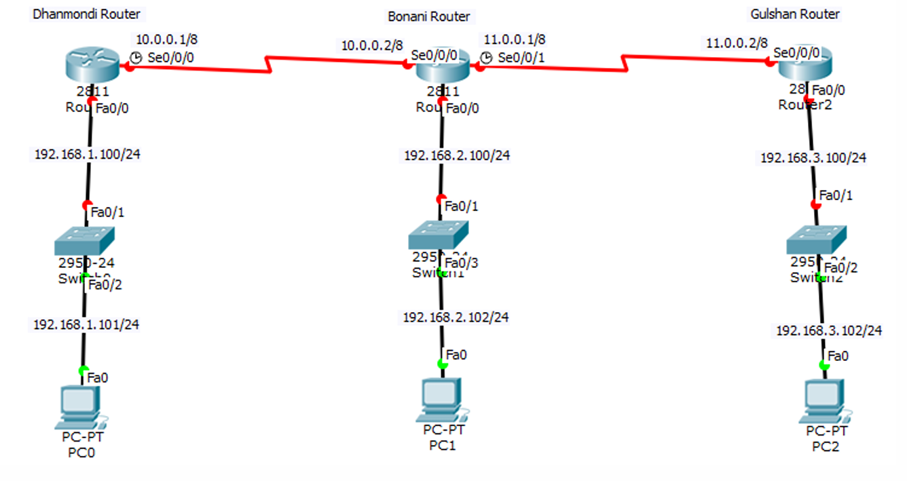

Dhanmondi Router
Router(config)#router rip
Router(config-router)#network 192.168.1.0
Router(config-router)#network 10.0.0.0
Router(config-router)#version 2
Router(config-router)#exit
Bonani Router:
Router(config)#router rip
Router(config-router)#network 192.168.2.0
Router(config-router)#network 10.0.0.0
Router(config-router)#network 11.0.0.0
Router(config-router)#version 2
Router(config-router)#exit
Gulshan Router:
Router(config)#router rip
Router(config-router)#network 11.0.0.0
Router(config-router)#network 192.168.3.0
Router(config-router)#version 2
Router(config-router)#exit